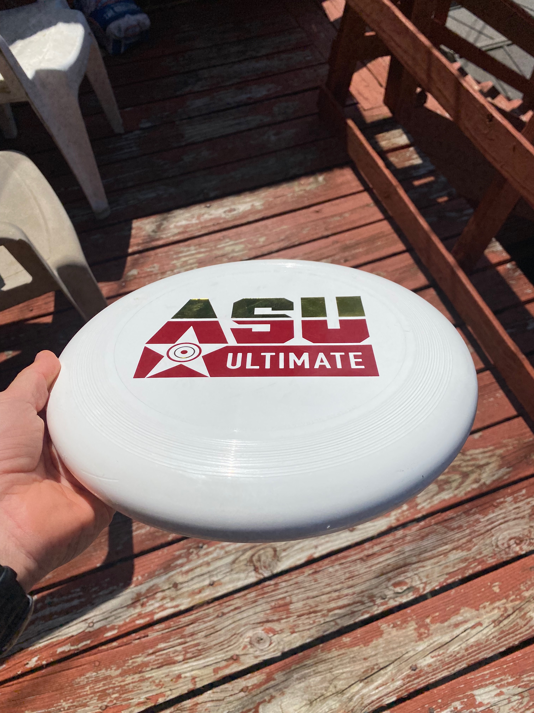

Gear for Ultimate
Cleats
The most essential piece of gear for any ultimate player is the cleats. You should look for a pair that is quite snug, but not tight. I typically like to use soccer cleats because they have a lower top which feels faster. I am currently using a pair of Nike cleats which are comfortable and somewhat flashy.
Disc
 When you are looking for the correct disc to play with, look no further than the offical game disc for USA Ultimate. This disc is made and sold by Discraft; the official provdider for ultimate frisbee on the collegiate and club level. This is the 175 gram Disc that you will see at any level of competition.
Jersey
 Nobody is on a team without a proper uniform! Here I have displayed an example of a iersey for ultimate.
It is very common to see two sided ierseys such as this one which allows you to easily switch from light to dark whenever you are playing pickup.
Nobody is on a team without a proper uniform! Here I have displayed an example of a iersey for ultimate.
It is very common to see two sided ierseys such as this one which allows you to easily switch from light to dark whenever you are playing pickup.